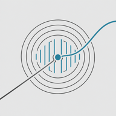

Spectral processor

SPETTRA 10
A spectral transfer instrument that moves between vocoding, animated filter-bank work and resynthesis. Ten-band immediacy can expand into a higher-resolution twenty-band engine.
SPETTRA treats sound as a moving spectral shape. CLASSIC 10 keeps the transfer immediate; PRO 20 increases resolution for detailed vocoding, filter-bank animation and more abstract spectral motion with internal or external carriers.
- CLASSIC 10 + PRO 20 engines
- Vocoder + spectral-transfer workflows
- Multi-band analysis / synthesis banks
- Spectral shift + animated bands
- Internal or external carrier / sidechain
Desktop VST3 + standalone for Mac and Windows: Get the desktop version · Watch the Ableton Live demo
iOS in development
- Targets
- iPhoneiPad
- Formats
- StandaloneAUv3
- Mode
- Audio effect
- Desktop
- VST3 · Windows + macOS